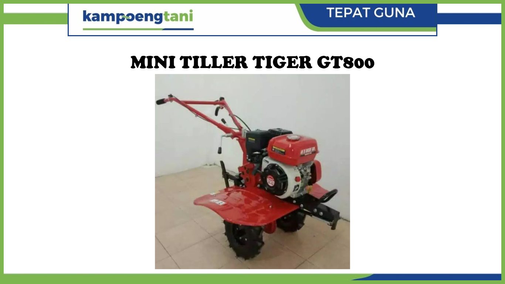

Cepat mengolah sawah dengan satu kali proses saja?
Ada tempat duduknya
dan tidak bikin capek?
Traktor segala
musim, segala kondisi lahan! Sawah basah dan sawah kering? Sanggup di sawah dalam
dan buat guludan?
Bertenaga kuat dan
mampu menyelesaikan sawah bergelombang bekas mesin panen combine?
Punya perlengkapan
tambahan untuk memotong semak, perdu dengan batang sampai 6 cm?
Cultivator merupakan alat dan mesin pertanian yang digunakan untuk pengolahan tanah sekunder. Cultivator bekerja dengan menggunakan gigi yang sedikit menancap ke dalam tanah sambil ditarik dengan sumber tenaga penggerak, umumnya traktor
Tersedia berbagai perlengkapan tambahan untuk menyesuaikan kondisi sawah dan tanah. Mencacah sempurna di lahan sawah berair bahkan untuk sawah dalam dengan perlengkapan roda besi sawah dalam dan tail skid ridding. Menggemburkan tanah dan sawah kering keras untuk siap ditanami berbagai komoditas hortikultura.

Kemampuan ditching rotor dan ridger membentuk guludan atau bedengan yang cepat sempurna. Sangat mengurangi biaya persiapan lahan pertanian. Cocok untuk berbagai komoditas pertanian seperti cabai, melon dan segala jenis sayuran
Review Customer
PURWANTO, LAMONGAN
Produk ini sangat memuaskan dalam pengolahan tanah dihalaman rumah saya. meskipun ukurannya kecil, daya galinya sangat mengesankan. MINI TILLER TIGER GT800 ini sangat mudah dioperasikan. Designnya yang ringan sangat mudah untuk dipindahkan dan konsumsi bahan bakar yang efisien membuatnya menjadi pilihan yang ekonomis.
AMIR, BOJONEGORO
Mini Tiller Tiger GT800 ini adalah alasan saya dalam pekerjaan pertanian kecil. Design kokoh dan stabil memberikan keamanan selama dioperasikan. Hasil dari pengolahan tanah yang konsisten pun dengan perawatan alat yang mudah..